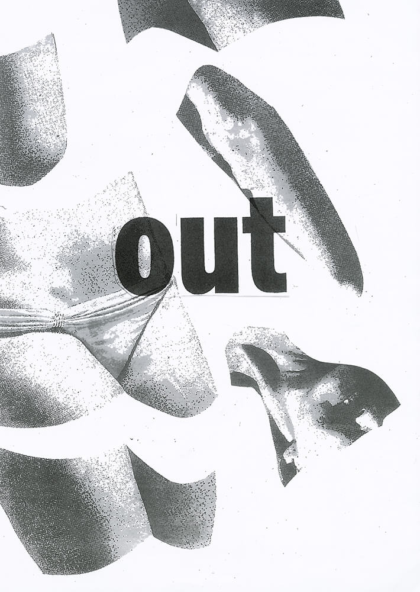
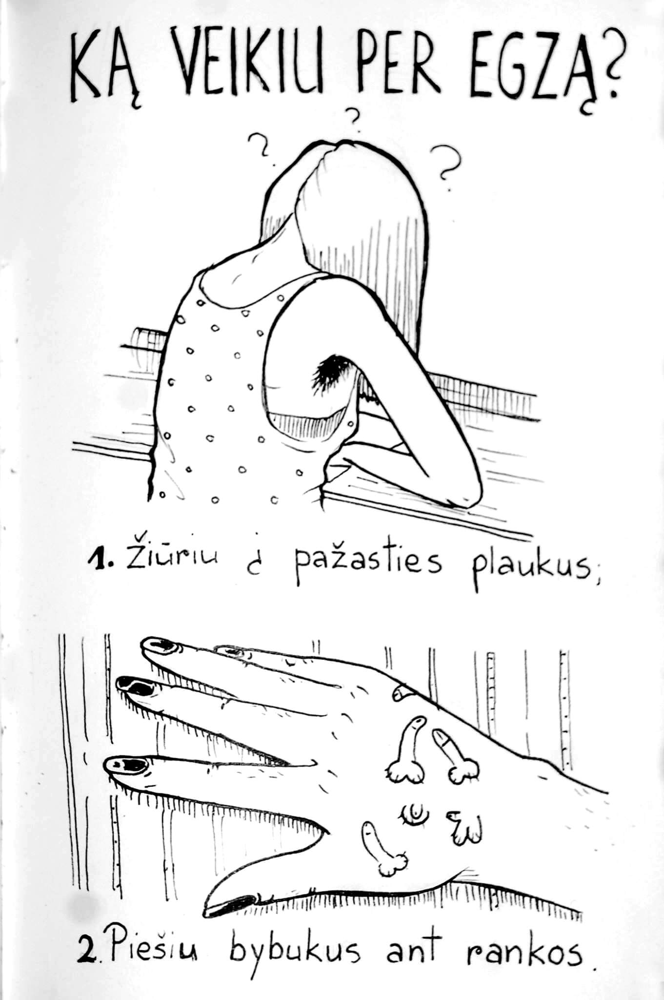
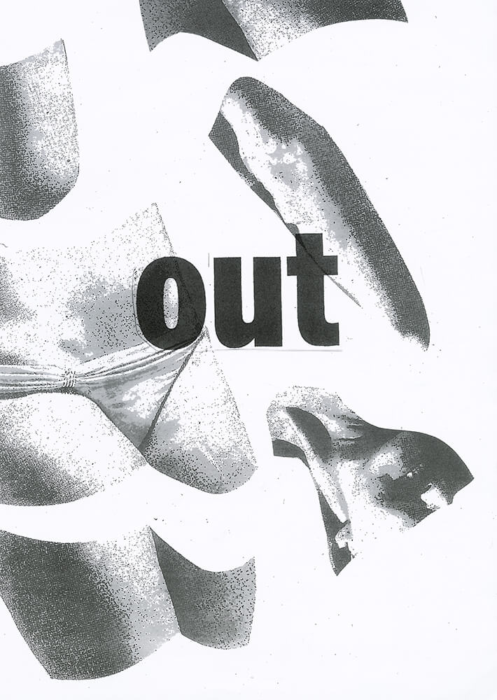
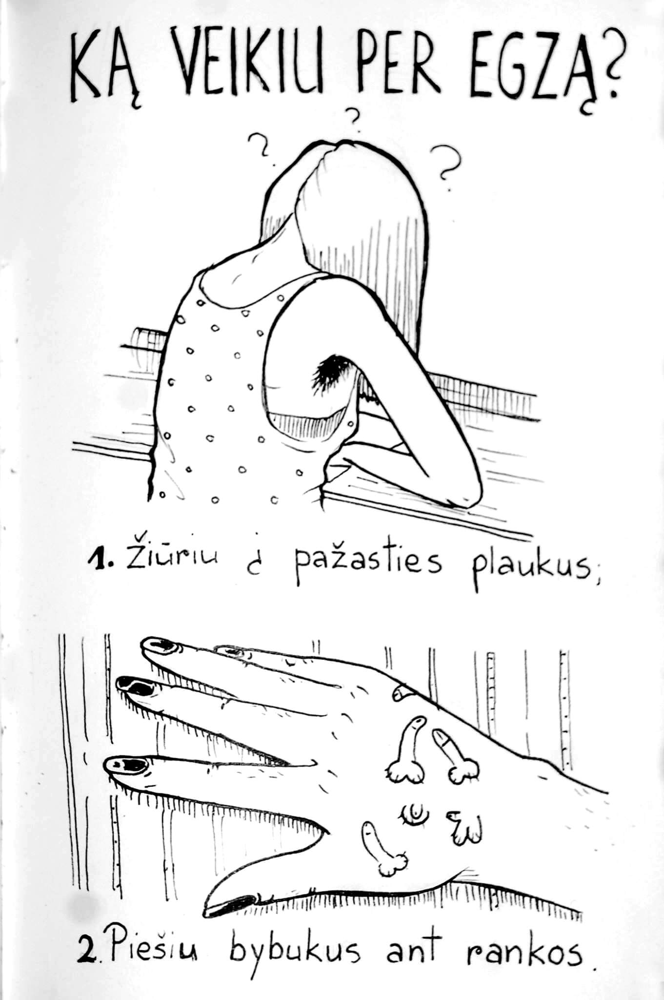

This was an autoportrait project.
The main idea was to project a progress in a way
of self-tolerance and self-acceptance.
Autoportrait
2015


The idea behind this calendar is to give color
to the typical soviet structures in Lithuanian
districts.
This is done in order to reflect
on various personalities and stories living
between the walls of these dull buildings.
District calendar
2016

A one-click game follows the progression
of a child’s addiction to technology and disconnection
from reality.
It expresses the symptoms of abundance
of devices - the concepts of body and human
communication transform into the world of electronics.
Timmy Disconnected
2016


This book is full of pen and paper games, which follow
a journey to depression caused by loneliness.
Each game
represents some kind of feeling or state of mind which appear
while falling deep into a chiasm of despair.
The Lonely Gamebook
2016


 






Adelina Glebova is a graphic design student of Vilnius
College of Design in Lithuania. Spent a semester in Royal
Academy of Arts, Netherlands. Since then found
an interest in code and designing for it.
Interests include biking and tripping over random objects
of her surroundings.